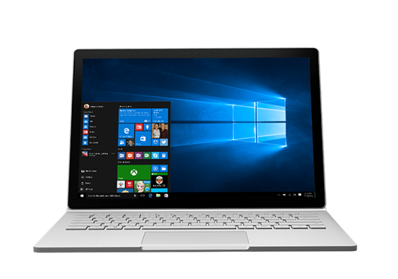

Surface Book
-
Available in 13.5” or 15” PixelSense Display
-
High-speed Intel processors (dual-core and quad-core available)
-
Up to 1060 NVIDIA GeForce GTX graphics
-
Up to 17 hours of battery life
-
Powerful enough to run professional-grade software and play PC games
-
New USB-C port
-
